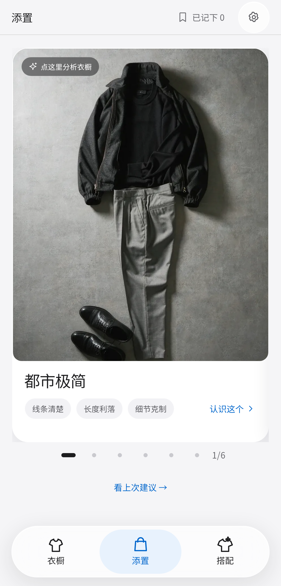
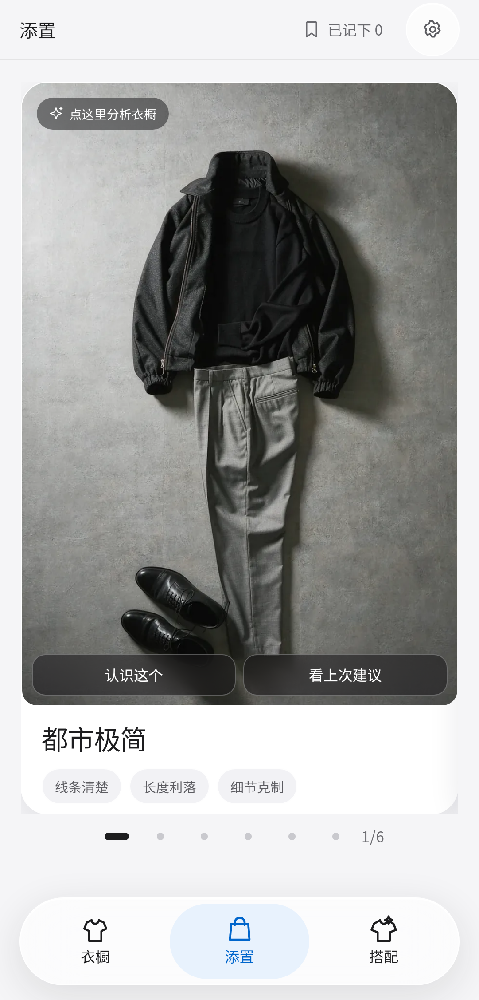
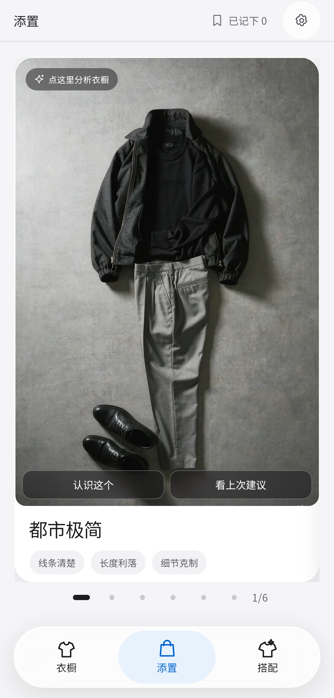

下面是真机截图（Redmi Note 10 Pro，393×819，DPR 2.75），不是画的示意图。三个状态都是在真机上把样式注入进去、量完再截的，数字是 getBoundingClientRect() 读出来的。
留 chips 的代价（44px）正好能被「去掉文案区底部 24px 空白 + links 变成卡上按钮（49px）」抵消，图框从 437 长到 510，离零裁切的 515 只差 5px。再去掉 16px 安全量能到 526，但已经比原图需要的 515 高出 11px —— 照片被放大 2%、左右各裁几像素，圆点也离 tabbar 只剩 16px（留住时是 32px），肉眼换不到任何东西。



| 状态 | 图框高 | 零裁切需要 | 差 | 卡片高 | 圆点到 tabbar | chips |
|---|---|---|---|---|---|---|
| 现在 | 437 | 515 | −78（裁 15.1%） | 551 | 81（links 占 49） | 3 |
| 留 chips | 510 | 515 | −5（裁 1.0%） | 600 | 32 | 3 |
| 留 chips + 去安全量 | 526 | 515 | +11（过冲 2.1%） | 616 | 16 | 3 |
object-fit:cover 就改成按高度铺满，照片整体放大、左右各裁几像素。鞋底本来就在画面 90% 处，往上再涨，只会更贴着按钮。.aesthetic-home-links截图目录：docs/design/shots/ · 真机：M2101K9C / com.zarek.wardrobe · 探针：_scratch/phone_bplus.js